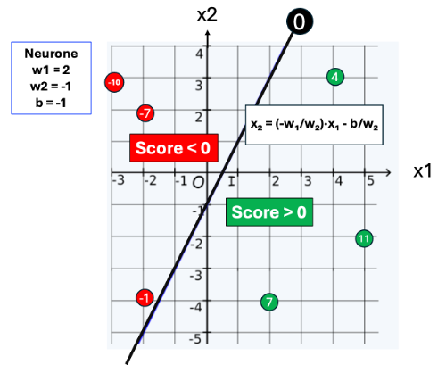
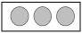
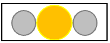
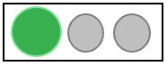
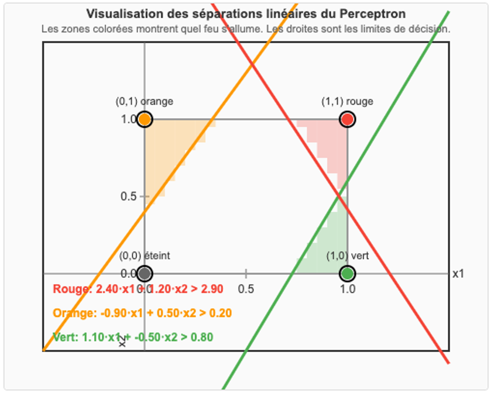

Le neurone artificiel : une fonction, pas un organe
Pourquoi "neurone"
Dans un neurone biologique, lorsque le cumul des stimulations reçues dépasse un certain seuil, le neurone excite son axone.
Ce comportement à seuil, simple en apparence, a inspiré les premiers modèles.
Les neurobiologistes et les informaticiens pensaient alors que l’intelligence émergerait du nombre de connexions, à l’instar du cerveau humain. Cette hypothèse s’est cependant révélée erronée.

Représentation d'un neurone biologique, source d'inspiration initiale
Le neurone artificiel est un calcul
Un neurone artificiel cherche à reproduire cette logique par
des opérations arithmétiques simples.
Il associe à chaque entrée un
poids qui détermine son
importance dans la décision finale.
Par des produits
et une somme, il calcule un
score brut
qui est traduit en
prédiction (au sens mathématique : la sortie du modèle) par une
fonction d'activation.
Le
perceptron est conçu à partir
du neurone d'origine : il s'active sur un dépassement de
seuil (ou échelon).

Schéma d'un neurone artificiel à deux entrées
La formule du score brut, avec
i entrées, est :
somme(xi·wi) + biais."
Le neurone du schéma à deux entrées calcule:
w₁·x₁ + w₂·x₂ + b. C'est l'équation d'une droite de décision dans
le plan des entrées (x₁, x₂), décalée de l'origine grâce au
biais b.
Cette frontière
sépare les scores positifs des négatifs. Les scores
nuls sont sur la frontière elle-même.
Représentation géométrique des scores bruts d'un neurone artificiel

Les poids w1,w2 conditionnent la pente de la droite,
et le biais son décalage de l'origine.
Le score brut est la distance, positive ou négative,
d'un point à la frontière de décision.
Tout neurone artificiel découpe son espace numérique en deux parties.
- Avec deux entrées, il sépare le plan (x₁, x₂) en deux parties par une droite de décision.
- Avec trois entrées, il séparera l’espace à 3 dimensions en deux parties par un plan de décision.
- Avec n entrées, il séparera un hyperespace en deux parties par un hyperplan de décision.
La fonction d'activation crée la prédiction
La
fonction d'activation
transforme le score en une
prédiction.
Celle du perceptron historique est la
fonction échelon H (Heaviside step function
du nom de son inventeur):
- La prédiction est 1 (vrai) si le score brut est positif ou nul.
- La prédiction est 0 (faux) si le score brut est négatif.

Le perceptron historique est un classifieur binaire.
Classifieur binaire
La fonction d'activation échelon crée des
classifieurs binaires, tout ou rien, vrai ou faux.
De nombreux usages sont binaires en fin de
traitement:
- Filtrage de spam (un message est-il spam ou non)
- Détection de fraude bancaire (transaction frauduleuse ou légitime)
- Diagnostic médical (présence ou absence d'un marqueur de maladie)
- Analyse de sentiment (avis positif ou négatif)
- etc.
Classification multiple
Si l'on a N catégories à isoler, on entraîne N
classifieurs différents, un par classe.
Ils partagent les valeurs des entrées mais chacun
a ses propres poids.
Si les catégories sont exclusives
(One-vs-all) il faut veiller à ce qu'une seule
sortie soit positive à la fois.
Ce n'est possible
que si l'on peut tracer une frontière droite pour
séparer parfaitement les catégories.
Un exemple de classification multiple à catégories
exclusives est proposé dans l'illustration ci-après.
Conclusion du chapitre 1
Le neurone artificiel est une simple fonction, dont les paramètres s’ajustent par apprentissage.
À l’inverse d’un calcul exact, ses résultats sont variables : pour un même problème,
il existe autant de solutions valides que d’entraînements, et donc de comportements possibles.
🟡 Illustration libre: un feu tricolore, deux interrupteurs
Le perceptron est le premier et le plus simple des neurones artificiels, mais il est suffisant pour en illustrer le fonctionnement.
Imaginons que nous n'avons que deux interrupteurs pour allumer individuellement les trois feux, vert, orange, rouge.Du code très simple pourrait le faire. L'ambition est d'utiliser des perceptrons pour en comprendre le fonctionnement.
Encodage des deux entrées et des trois sorties:
-
On prend arbitrairement comme convention qu'un
interrupteur fermé a la valeur 1 et un interrupteur
ouvert la valeur 0.
- On considère que la prise d’un feu est alimentée si sa valeur est 1 et hors tension si elle vaut 0.
Le jeu de données et de test
Il définit le comportement attendu du réseau de neurones.
Cela s'appelle un
apprentissage supervisé : on
fournit au modèle des exemples étiquetés (« entrée +
sortie attendue »), et il apprend à reproduire ce
comportement.
Ci-dessous, chaque ligne du tableau est
un exemple supervisé:
(entrées) → (sortie souhaitée).
| Interrupteurs | sortie visuelle | sortie numérique |
|---|---|---|
| 0 0 ouvert ouvert |
 |
0 0 0 |
| 0 1ouvert fermé |

|
1 0 0 |
| 1 0 fermé ouvert |
 |
0 1 0 |
| 1 1 fermé fermé |
 |
0 0 1 |
Un neurone par feu
Un neurone n'ayant qu'une sortie, il faut associer trois neurones distincts: un neurone par feu.

Association de 3 neurones Perceptron en vision boîte
blanche
L'entrée à "1" du biais
Pour que tous les neurones utilisent la même règle simple — activer si le score est positif —, on intègre le biais directement dans le calcul de la somme. Pour cela, on ajoute une entrée fixe à 1, multipliée par le biais.La taille d'un modèle
Un modèle est le tableau
numérique des paramètres une fois que le réseau est
entraîné. Sa taille est son nombre de paramètres.
Notre modèle est un
modèle à 9 paramètres et 1 couche de sortie
( faite de 3 neurones avec 3 paramètres chacun.)
Les réseaux pour la reconnaissance d'images ont
des millions (106) de paramètres et des
dizaines de couches.
Les grands
LLM (Large Language Model) qui
répondent aux questions en ont des
milliers de milliards (1012) et des
centaines de couches.
Le fonctionnement de base fait de calculs reste le
même, que ce soit pour 10, 106 ou 1012
paramètres, mais la puissance de calcul à mobiliser est
exponentielle.
Expérimenter ce réseau
Les poids sont initialisés au hasard au début de chaque
entraînement. Le but est de les ajuster pour isoler chaque
feu indépendamment.
On pourra entraîner soi-même le modèle en modifiant
ses poids ou voir un algorithme de résolution automatique en
action.

La visualisation montre les droites de décision des
trois neurones selon leurs paramètres actuels.
Les points colorés indiquent quel feu doit s'allumer
selon la position des interrupteurs.
Un point doit être du côté où le score brut de son
neurone est positif (zone colorée) et y être le
seul.